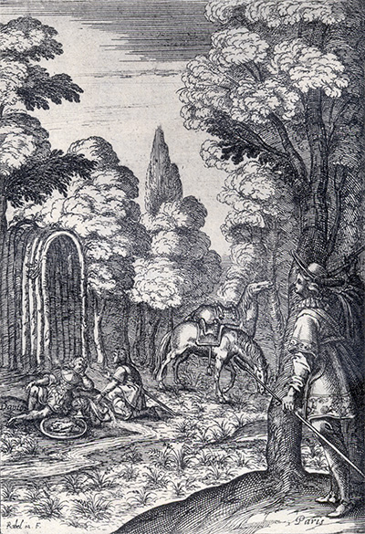
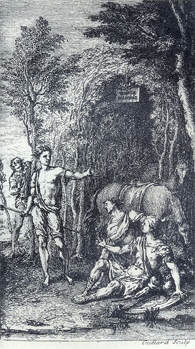
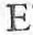

L'Astrée
d'Honoré d'Urfé
Troisième partie
Livre 1

Gravure signée Rabel
Devant le temple d'Astrée, Paris se cache pour écouter Damon et Halladin.
Un tigre est dessiné sur le bouclier (III, 1, 15 recto)
L'AstréeIII, 1. Édition Vaganay**, 1925Gravure signée Rabel
Devant le temple d'Astrée, Paris se cache pour écouter Damon et Halladin.
Un tigre est dessiné sur le bouclier (III, 1, 15 recto)
(Voir Illustrations)

Gravure signée Guélard
Devant le temple d'Astrée, Paris caché écoute Damon et Halladin
qui s'entretiennent avec Adraste (III, 1, 20 recto)
L'AstréeIII, 1. Édition Vaganay**, 1925Gravure signée Guélard
Devant le temple d'Astrée, Paris caché écoute Damon et Halladin
qui s'entretiennent avec Adraste (III, 1, 20 recto)
(Voir Illustrations)
Éd. de 1619, 1 recto.
Éd. Vaganay, III, p. 11.
l'Aurore d'ouvrir promptement les portes du Ciel afin de donner commencement à ce jour bienheureux et si longuement attendu. Et parce que sa lumière ne paraissait point encore, il chanta dans le lit même tels vers :
Mon cœur, qui t'élevant d'un vol trop téméraire,
Ne vois de ton désir la folle trahison,
Et qui sans y penser avales le poison
Sous un sucre trompeur, que penses-tu de faire ?
Mon cœur, ne vois-tu pas qu'il serait nécessaire,
Pour trouver
quelquefois à ton mal guérison,
De nous hausser plus haut que ne veut la raison,
Ce garçon
η imitant qui ne crut à son père.
Je vois bien que tu dis qu'en un sujet si beau
Il vaut mieux que la mer nous serve de tombeau, "
Et qu'Amour dans la perte a mis la récompense.
Ô mon cœur ! il est vrai, je ne t'en dédis pas !
Mais pour n'être déçus, n'ayons donc espérance
De nul autre bonheur que de ce beau trépas.
I.

E
sprit plus dangereux que la
mer
n'est à craindre,
Et de qui l'amitié
N'espérez que vos feux puissent plus rallumer
Ce qu'ils purent éteindre.
C'est un peu sage Nocher "
Qui, battu de même orage "
Contre le même Rocher, "
Se perd d'un second
Et de qui l'amitié
η m'apprend à désaimer,N'espérez que vos feux puissent plus rallumer
Ce qu'ils purent éteindre.
C'est un peu sage Nocher "
Qui, battu de même orage "
Contre le même Rocher, "
Se perd d'un second
naufrage
. "
La Nature en changeant se rend belle çà-bas.
" Rien n'est en l'Univers, qui ne
change
de même.
" Et voyant tout changer, ne changerai-je pas ?
" Et voyant tout changer, ne changerai-je pas ?
Tu me donnes la mort, et je soutiens ta vie.
Ces maux, ces morts, ces tourments infinis
Jamais de nous ne se verront bannis,
Et seulement nous vivrons à l'outrage.
Celui qui peut tant d'offenses souffrir
Sans promptement se résoudre à mourir
A bien un cœur, mais n'a point de courage.
Pour être sage aussi, qu'elle en fasse de même,
Égale en soit la loi.
Que s'il faut par destin que la pauvrette m'aime,
Qu'elle m'aime donc sans moi.
qui, les ayant aperçus de loin, venait vers eux avec bonne troupe de ses Vierges. Cela fut cause que, mettant fin à leurs disputes, ils s'avancèrent tous pour la saluer et lui rendre l'honneur qui était dû à sa vertu et à la profession qu'elle faisait.
Fin du premier livre.

Liminaires

Livre 2
Référence électronique :
document.write('"'+document.title.substr(0, document.title.indexOf("-")-1)+'". '+"Dernière mise à jour : "+ExtractDate(document.lastModified)+".")Deux visages de L'Astrée.
©2005-2020 E. Henein.
URL :
var today = new Date();
document.write(document.URL +
"<br>Consulté le : " + today.toLocaleDateString("fr-FR") + ".");
var _gaq = _gaq || [];
_gaq.push(['_setAccount', 'UA-19288475-1']);
_gaq.push(['_trackPageview']);
(function() {
var ga = document.createElement('script'); ga.type = 'text/javascript'; ga.async = true;
ga.src = ('https:' == document.location.protocol ? 'https://ssl' : 'http://www') + '.google-analytics.com/ga.js';
var s = document.getElementsByTagName('script')[0]; s.parentNode.insertBefore(ga, s);
})();
Deux visages de L'Astrée.
©2005-2019 Eglal Henein. Creative Commons 4 
Édition critique de la première partie de L'Astrée (1607, 1621)
mise en ligne le 9 avril 2007
Édition critique de la deuxième partie de L'Astrée (1610, 1621)
mise en ligne le 10 octobre 2010
Édition critique de la troisième partie de L'Astrée (1619, 1621)
mise en ligne le 1er novembre 2014
Édition critique de la quatrième partie de L'Astrée (1624)
mise en ligne le 15 janvier 2019
document.write("Dernière mise à jour : "+ExtractDate(document.lastModified))